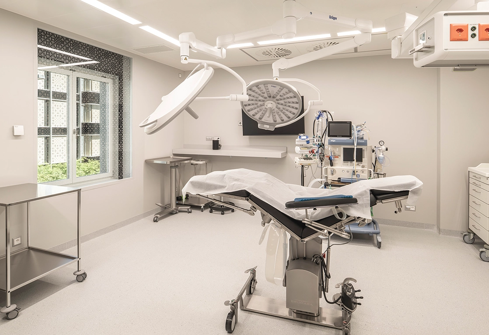
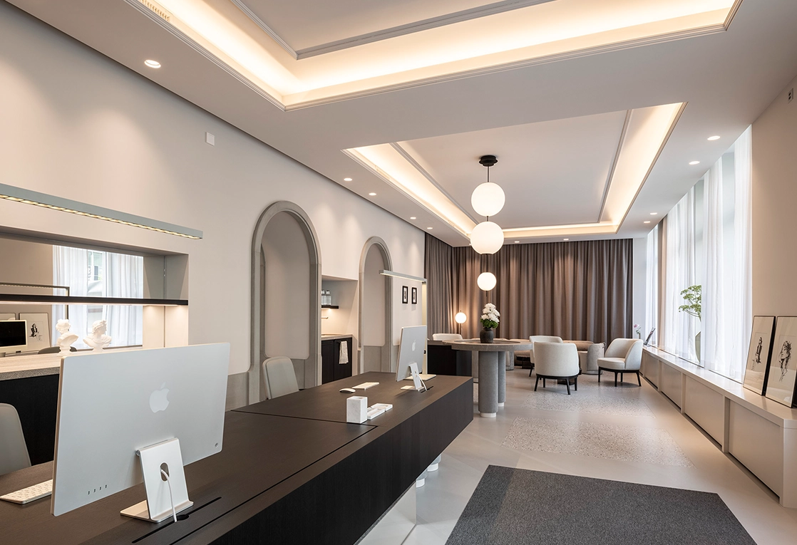
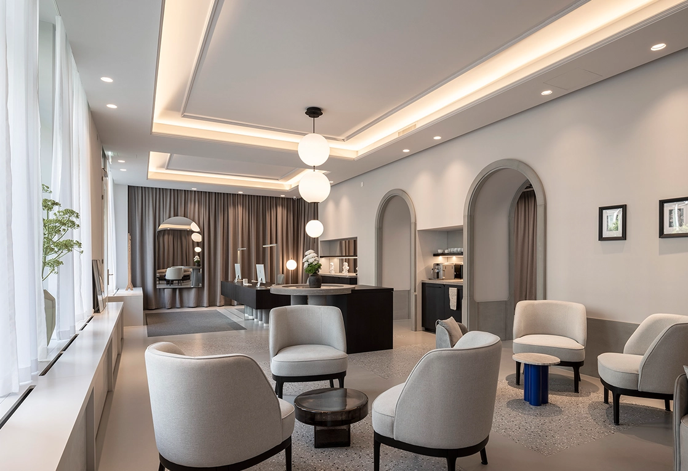
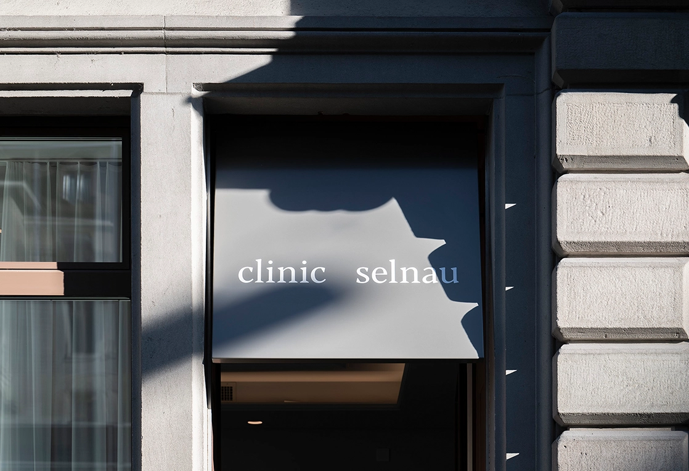

Science. Care. Longevity.
Hautgesundheit ist messbar.
Dermetrics ist die dermatologische Praxis von Dr. med. Paul Georg in der Clinic Selnau Zürich — spezialisiert auf Hautkrebs-Prävention, Hautalterungs-Analyse und dokumentierte Verlaufsmessung.
- Facharzt Dermatologie FMH
- 3D-Ganzkörper-Screening
- Clinic Selnau, Zürich
Kernbereiche
Die drei Säulen von Dermetrics
Diagnose und Behandlung von Hautkrebs
Aktinische Keratosen, Spinaliome, Basalzellkarzinome. Das gesamte Spektrum der operativen Dermatologie.
Allgemeine Dermatologie
Fokus auf entzündliche Hauterkrankungen wie Rosazea, Hidradenitis suppurativa, Acne vulgaris und Plaque-Psoriasis.
Prävention und Patientenedukation
Ein personenzentriertes Präventionskonzept zur Vermeidung von Hautkrebs und entzündlichen Erkrankungen.
Risiko-Triage
Wie hoch ist Ihr Hautkrebs-Risiko?
Dreizehn Fragen zu Vorgeschichte, Hauttyp und UV-Exposition. Das Ergebnis ordnet Sie einer Studienlage zu — es stellt keine Diagnose.
Basiert auf validierten Risiko-Modellen (u. a. QSkin/MP16) · Ersetzt keine ärztliche Diagnose.
Risiko-Score
Die Skin X Longevity Journey
Ihr Weg mit Dermetrics
Check — Online herausfinden, ob und wann
Kurzer Pre-Check zur Risikoeinschätzung.
Messen — Ganzkörper-Screening vor Ort
Scan mittels DeviScan, Auswertung per E-Mail nach max. 72 Stunden.
Verstehen — Befunde besprechen, Behandlungspfad planen
Verlaufstermin, persönliches Hautalter, optionale Hautalterungs-Analyse als Zusatzleistung.
Handeln — Haut und gesunde Hautalterung zusammendenken
Drei Bereiche — Prävention, Longevity, wo passend Ästhetik — aufeinander aufbauend, auf medizinischer Evidenz.
Dranbleiben — Hautgesundheit und Kontrollintervalle in der App verfolgen
UV-Übersicht, nächster Kontrolltermin, passende Wissensinhalte.
Ganzheitlich. Objektiv. Verständlich.
Data today. Health tomorrow. · Science. Care. Longevity.
Clinic Selnau
About Clinic Selnau
Clinic Selnau versteht sich als spezialisierte Gemeinschaftspraxis im Zentrum Zürichs: Jede Ärztin und jeder Arzt konzentriert sich bewusst auf ein klar umrissenes Fachgebiet, statt das gesamte Spektrum abzudecken. Dieser Fokus prägt, wie eine Indikation eingeschätzt und ein Eingriff geplant wird, immer mit dem Ziel, die individuelle Anatomie zu respektieren und nur das zu verändern, was tatsächlich davon profitiert. Und das auf hohem fachärztlichen Niveau.




Dermetrics App
Ihr Verlauf, jederzeit im Blick
Guter Verlauf · +4 seit Mai · nächste Messung Feb 2027
Beispieldaten — keine echten Patientendaten.
- Alle Termine und Befunde auf einem Zeitstrahl
- Erinnerungen an Kontrollen (automatische Intervallberechnung)
- Ihre Berichte jederzeit abrufbar (PDF, nach Freigabe)
Start zeitgleich mit der Praxiseröffnung in der Clinic Selnau. Die App ist für Patient:innen der Praxis kostenlos.
Im App Store vormerken → (bald verfügbar)Chirurgie und Messbarkeit
Wie macht man medizinische Qualität sichtbar?
Dr. med. Paul Georg studierte Medizin an der Medizinischen Hochschule Hannover und führte sein Doktorandenprojekt am St. Thomas Hospital / King's College London durch — ein Verfahren zur objektiven Messung von Ergebnissen bei Lippen-Kiefer-Gaumenspalt-Operationen, mit 3D-Fotografie und einem selbst definierten Gesichts-Symmetrie-Index.
Es folgten chirurgische Jahre am Kantonsspital Münsterlingen (Chirurgie, Intensivmedizin, Hand- und Plastische Chirurgie) sowie ein Auslandseinsatz am New Somerset Hospital in Kapstadt.
Die Dermatologie wurde zur fachlichen Heimat: Weiterbildung am Haut- und Laserzentrum Weinfelden, an der Universitätsklinik für Dermatologie am Inselspital Bern und an der Venenklinik Bellevue Kreuzlingen. Als Leiter der Wundsprechstunde am Spital Affoltern am Albis entwickelte er einen semi-automatisierten Algorithmus zur digitalen Wundvermessung, publiziert im Journal of Clinical Medicine 2024. Er ist Initiator und Board-Mitglied der EWMA European Young Wound Experts Group.
2026: Facharztprüfung Dermatologie und Venerologie FMH und Gründung von Dermetrics.
Qualifikationen
- Facharzt für Dermatologie und Venerologie FMH
- Dr. med. (MH Hannover / King's College London)
- Leiter Wundsprechstunde Spital Affoltern a. A.
- EWMA Young Wound Experts Group, Initiator und Board Member
- Zertifizierungen: Dermatochirurgie, Lasertherapie, Phlebologie/SGUM, Botulinumtoxin und Filler (DGDC)
Laufbahn
| Jahr | Station |
|---|---|
| Dr. med., King's College London / MH Hannover · 3D-Messung | |
| Grundausbildung Chirurgie, Plastische Chirurgie, Intensivmedizin, Münsterlingen | |
| Assistenzarzt Dermatologie, Inselspital Bern | |
| Assistenzarzt Novaderm Affoltern a. A. · Leitung Wundsprechstunde Spital Affoltern | |
| – | Parallel, Teilzeit: Assistenzarzt Venenklinik Bellevue Kreuzlingen (Phlebologie, Wundklinik, Ultraschalldiagnostik) |
| Facharztprüfung und Gründung Dermetrics | |
| Start Dermetrics @ Clinic Selnau |
Wissen & Education
Sechs Themen, die im Sprechzimmer immer wieder aufkommen
Kurz und ohne Fachjargon erklärt.
Selbsttest
Wahr oder falsch: Hautkrebsvorsorge
Ein kurzer, evidenzbasierter Wahr-oder-Falsch-Check zur Hautkrebsvorsorge — besonders relevant für Menschen mit erhöhtem Risiko.
0/8 beantwortet · 0 richtig
Auch an bewölkten Tagen dringt UV-Strahlung durch die Wolken.
Antwort anzeigen
Antwort: Wahr
Die UV-Strahlung ist zwischen 10 und 16 Uhr am stärksten.
Antwort anzeigen
Antwort: Wahr
Vorbräunen im Solarium schützt die Haut vor Sonnenschäden im Urlaub.
Antwort anzeigen
Antwort: Falsch
Ein Muttermal über 6 mm Durchmesser ist automatisch bösartig.
Antwort anzeigen
Antwort: Falsch
Sonnencreme sollte etwa alle 2 Stunden erneuert werden.
Antwort anzeigen
Antwort: Wahr
Nach einem ersten Hautkrebs ist eine monatliche Selbstuntersuchung der Haut sinnvoll.
Antwort anzeigen
Antwort: Wahr
Eine Wunde, die länger als 4 Wochen nicht heilt, sollte ärztlich abgeklärt werden.
Antwort anzeigen
Antwort: Wahr
Im Schatten ist ein Sonnenbrand ausgeschlossen.
Antwort anzeigen
Antwort: Falsch
Dieser Kurz-Check dient der allgemeinen Aufklärung und ersetzt keine ärztliche Untersuchung. Bei Fragen zu Ihrer individuellen Situation — etwa zu vorbeugenden Massnahmen wie Nicotinamid — sprechen Sie mit Ihrem Arzt.
Standorte & Termin
Drei Standorte im Raum Zürich
Sprechstunde, Zweigstandort und 3D-Scan. Neue Patientinnen und Patienten willkommen.
Clinic Selnau
Hauptstandort · jeden Montag
Brandschenkestrasse 45
8002 Zürich
Montag 10:00–18:00
Novaderm Affoltern am Albis
Zweigstandort
Obstgartenstrasse 3
8910 Affoltern am Albis
Dienstag 08:00–17:00
Donnerstag 08:00–17:00
MediX Zürich-Altstetten
Analysis-Standort · 3D-Scan
Hohlstrasse 556
8048 Zürich
Mittwoch 09:00–17:00, Freitag 08:00–12:00
3D-Scans täglich nach Vereinbarung